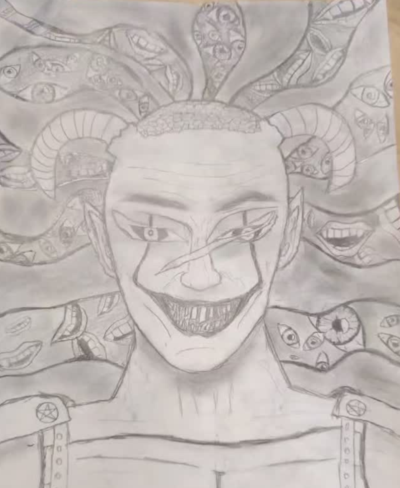
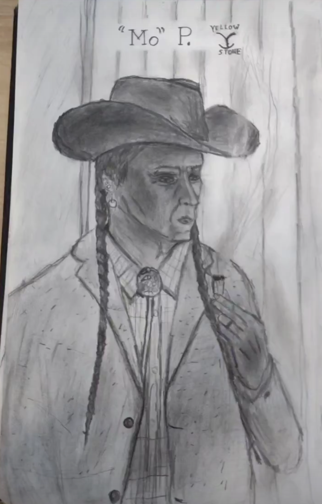
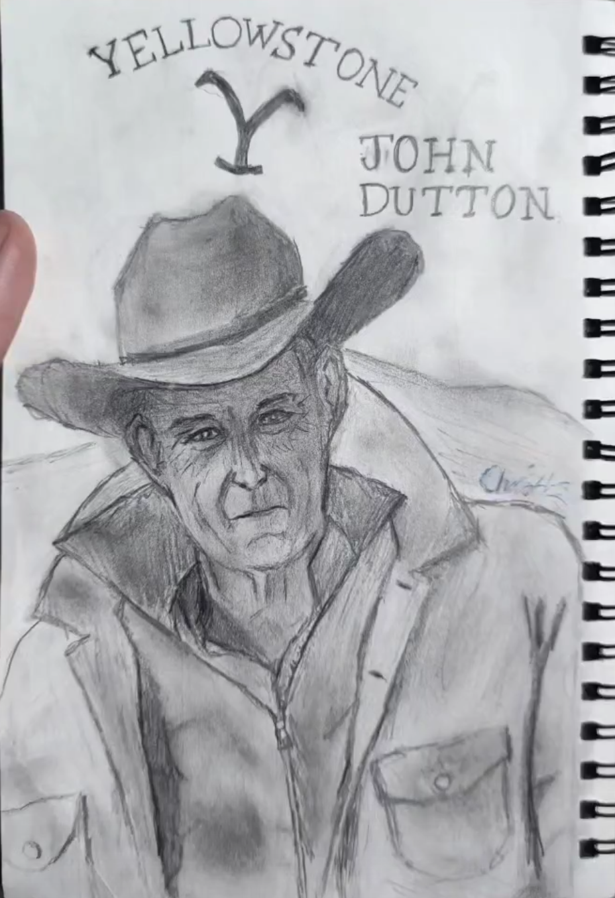
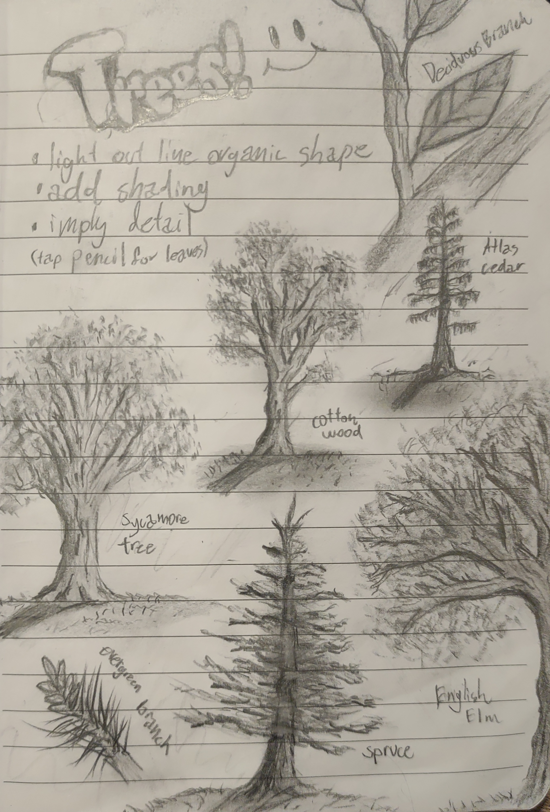
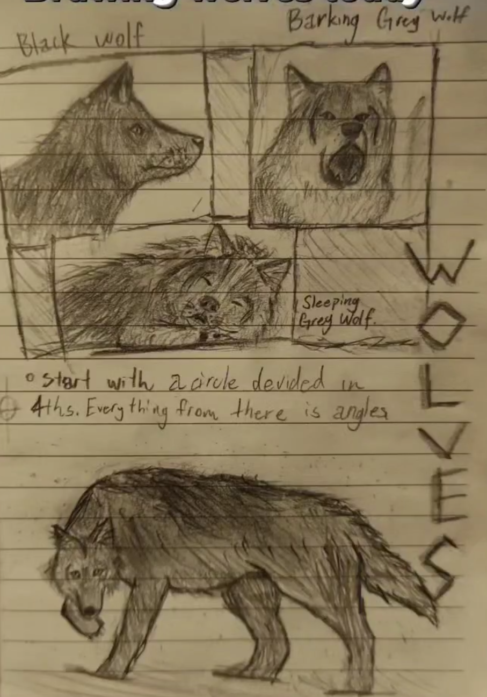
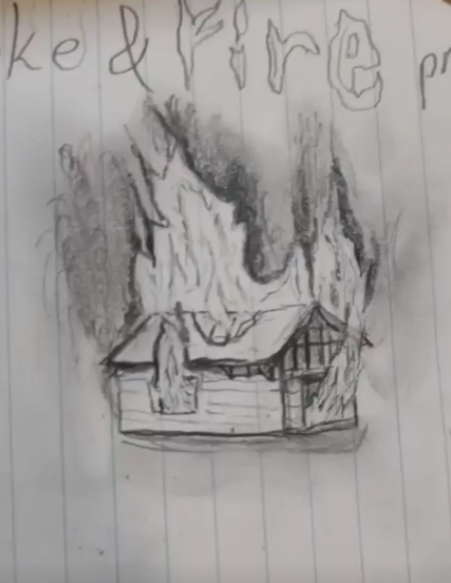
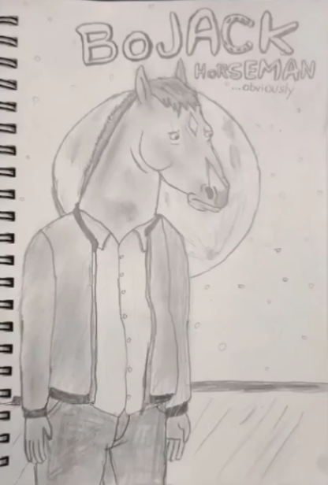

Graphite
A Digital Gallery
About Graphite

Hi my name is Chris Switzer (pictured above) I've been " seriously" drawing for just under a year now and wanted to make a gallery of some of my work. I decided to call this gallery Graphite as most of my drawings are Graphite pencil drawings.
I never really
drew anything before other than elementary school art classes. I really only started drawing when I was bored at school at first.
One of the first things I drew when I started last year was "I Hate Mondays"
It was just a little doodle featuring a woman screaming at Garfield while Garfield sits there unbothered and whimsical as always.
Graphite Gallery
This was a quick sketch of a friend I did while he was sleeping in math class. This was before I really started drawing back in 2021.

Here's a drawing from halloween.
This is my favorite drawing of all time. This one took about 4 or 5 hours. Instead of using hard outlines I used shading and highlights in order to build shape instead of defining a shape harshly with outlines.
This paticular subject is my better half, Gabriella.
This is another "soft" drawing. This is my friend Hayden that got me into sketching and drawing.
Some of my favorite things to draw are characters from media.
Especially westerns and western shows.


I also love practicing random things that aren't human. (Trees, wolves, fire, etc.)



